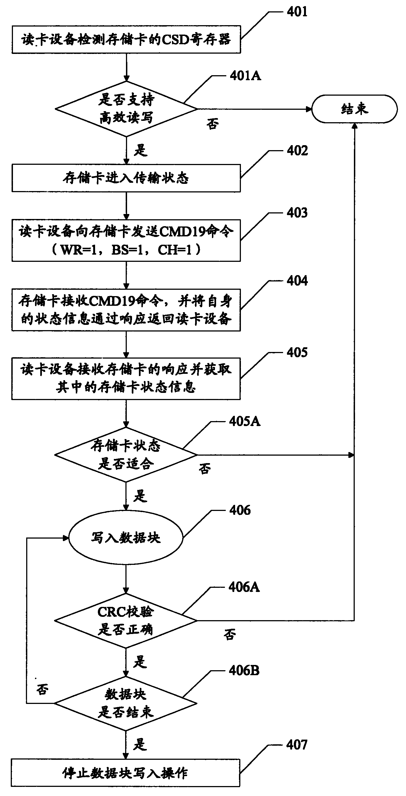

发明名称--一种存储卡数据处理方法
| 申请号 | CN200610139726.9 | 申请日 | 2006.09.22 | ||
| 公开（公告）号 | CN101149724A | 公开（公告）日 | 2008.03.26 | ||
| IPC分类号 | G06F13/42; G06K17/00; G06F13/00 | 申请（专利权）人 | 普天信息技术研究院; | ||
| 发明人 | 曹会扬; | 优先权号 |
摘要:
本发明提供一种基于通讯模式的存储卡数据处理方法，可有效提高存储卡的数据传输速度。本发明通过存储卡的扩展通讯协议命令，通过一个命令就可实现多项读写操作相关设置，包括对数据块个数和数据块长度的设置。本发明提供的方法扩展了普通存储卡的数据流操作的传输模式，从而提高其数据传输的速度；简化了普通存储卡的数据块操作流程，从而提高其数据传输的效率。这样，通过本发明的方法，在提高了存储卡读写效率的同时，还具有很好的兼容性。
摘要附图:
